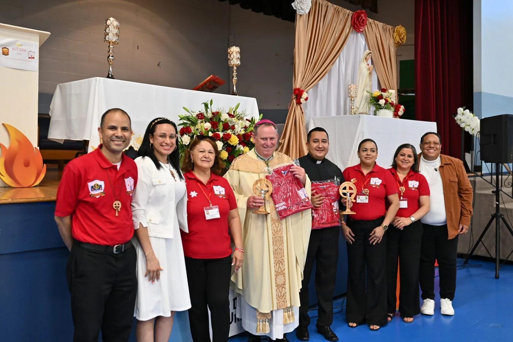
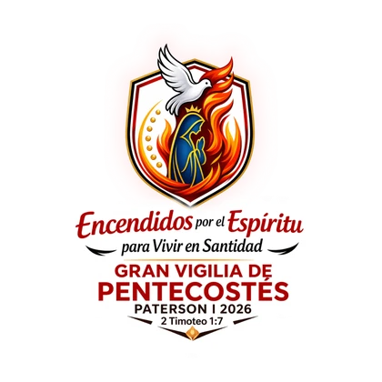
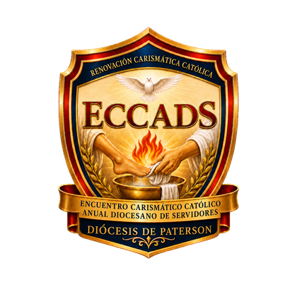

Diócesis de Paterson, Nueva Jersey
Diócesis de Paterson, Nueva Jersey
Renovación Carismática
Católica
El Centro Carismático Católico Digital de la Diócesis de Paterson
“Ven Espíritu Santo, enciende tu fuego”
↓ Desliza para conocernos
Diócesis de Paterson, Nueva Jersey
El Centro Carismático Católico Digital de la Diócesis de Paterson
“Ven Espíritu Santo, enciende tu fuego”
La Renovación Carismática Católica de la Diócesis de Paterson reúne a los grupos de oración de toda la diócesis bajo un mismo Comité Diocesano, con un escudo que resume nuestra identidad: la paloma del Espíritu Santo, los siete dones, y María, Nuestra Señora de Pentecostés.
Vivimos y servimos dentro de la Iglesia Católica, en comunión con nuestros pastores y con la Diócesis de Paterson, y en comunión con la Renovación Carismática Católica a nivel regional (Región 2) y nacional (Estados Unidos y Canadá) — presentes en la vida parroquial a través de nuestros ministerios, escuelas de formación y encuentros diocesanos.

En comunión con la Renovación Carismática Católica Región 2 y de los Estados Unidos y Canadá.
Ser una Renovación Carismática Católica viva, evangelizadora y en comunión en la Diócesis de Paterson, que forme discípulos misioneros, llenos del Espíritu Santo, comprometidos con la santidad, el servicio y la formación integral.
Promover la experiencia del Bautismo en el Espíritu Santo, renovar la vida de fe en las comunidades hispanas de la Diócesis de Paterson, y fortalecer nuestros ministerios y grupos de oración como espacios de encuentro con Dios, formación y misión evangelizadora.
Fuente de toda acción pastoral.
Quien guía, corrige y renueva.
En unidad con los pastores y la Iglesia.
Expresión viva del amor en acción.
Para madurar en los dones y en la fe.
Inspirados en el Plan Pastoral Nacional 2026–2028 del Comité Nacional de Servicio Hispano (RCC Hispana), aplicado a nuestra realidad como Renovación Carismática Católica de la Diócesis de Paterson.
La experiencia del Bautismo en el Espíritu Santo.
Desde una auténtica Cultura de Pentecostés.
A la Iglesia y a las comunidades de la Renovación Carismática Católica de la Diócesis de Paterson.
Los servidores que coordinan la vida de la Renovación Carismática Católica de la Diócesis de Paterson.

Director de Ministerios de Música y Comunicación/Publicidad
Cada ministerio de la RCC Paterson tiene un llamado específico dentro del cuerpo de Cristo. Conoce su identidad y propósito.
Los grupos de oración que conforman la Renovación Carismática Católica de la Diócesis de Paterson, organizados por parroquia.
El horario de 7:00 pm – 9:30 pm es provisional para todos los grupos mientras se confirma el horario real de cada uno con el Comité Diocesano. Si coordinas un grupo y tu información no aparece o necesita corrección, contáctanos.
Los próximos encuentros abiertos a toda la comunidad de la Renovación Carismática Católica de la Diócesis de Paterson.
Predicación: Diácono José Luis Abreu · Música: Marvin Núñez
Predican Su Excelencia Pedro Bismarck Chau (Obispo Auxiliar de Newark) y Mons. Joseph Malagreca · Donación: $30 (incluye almuerzo)
Predicación: Osvaldo Fernández, P. Starli Castaños (sáb.) y P. Yasid Salas (dom.)
Predicación: María Batista
Esta agenda se sincroniza con el calendario público oficial de la RCC Paterson. Horarios y sedes sujetos a confirmación final por el Comité Diocesano.
Los grandes encuentros de la Renovación Carismática Católica de la Diócesis de Paterson, ya realizados.

Resumen de la noche, nuestro obispo y sacerdotes, ministerios de música y más de 120 fotos del evento.
Ver evento completo →
Programa completo, invitados especiales, galería de fotos y video resumen del primer encuentro.
Ver evento completo →Cuatro departamentos de apoyo interno sostienen la vida diocesana y cada uno de nuestros eventos. No son ministerios, sino equipos de servicio con sus propios coordinadores — comunícate directamente con ellos si deseas formar parte como voluntario, o apadrinar, patrocinar o donar para su labor.
Cuenta con toda clase de objetos religiosos y sacramentales que ayudan a fortalecer la vida espiritual, tanto de los servidores como de todos los hermanos que asisten a nuestros eventos. Está presente en cada uno de ellos, para que la comunidad pueda acercarse y adquirirlos. No cuenta con catálogo en línea: para hacer un pedido o preguntar por la existencia de algún artículo, comunicarse directamente con el departamento a través de los siguientes contactos.
Se encarga de que, en cada evento, los hermanos reciban el sustento — alimento y bebida — que necesitan, siempre bajo el cuidado de quien coordina el departamento. Según el tipo de evento, este sustento se ofrece de manera gratuita o a la venta a un precio módico. Interesados en donar alimentos o unirse como voluntarios pueden contactar a:
Vela por que el salón, los baños y las demás áreas estén debidamente acondicionados en materia de higiene, antes, durante y después de cada evento — no solo en la Casa de la Renovación (Santa Teresita), sino en cualquier lugar donde nos reunamos. Interesados en donar artículos de higiene o unirse como voluntarios pueden contactar a:
Se encarga de que cada evento tenga el esplendor que merece, acorde a nuestra fe y a nuestros símbolos, y acorde también al lugar donde nos reunimos — como Dios lo merece y como merecen quienes le servimos y quienes lo buscamos. Interesados en donar o unirse como voluntarios pueden contactar a:
“Le damos la bienvenida a organizaciones o empresas que quisieran apadrinar, patrocinar o donar cualquier evento o necesidad de la RCC.”
— Mensaje de bienvenida a patrocinadores y donantes · RCC Paterson NJEs un movimiento dentro de la Iglesia Católica que promueve la experiencia del Bautismo en el Espíritu Santo y busca renovar la vida de fe de la comunidad a través de la oración, la alabanza y el servicio. En la Diócesis de Paterson, NJ, agrupa a 18 grupos de oración y 8 ministerios diocesanos bajo un mismo Comité Diocesano.
Sí. La RCC es un movimiento eclesial reconocido que vive y sirve en comunión con la Iglesia Católica, sus pastores y la Diócesis de Paterson — no es una iglesia aparte ni una denominación distinta.
Ambas valoran la experiencia del Espíritu Santo, pero la RCC es un movimiento dentro de la Iglesia Católica —con Misa, sacramentos y comunión con el Papa y los obispos— mientras que las iglesias pentecostales son denominaciones protestantes independientes. La RCC Paterson funciona a través de las parroquias católicas de la diócesis.
Puedes visitar cualquiera de los 18 grupos de oración de la RCC Paterson, organizados por parroquia, día y zona — consulta el horario, la dirección y el coordinador de cada uno en la sección Grupos de Oración de esta página, o contáctanos directamente para que te orientemos hacia el más cercano a ti.
Ocho: Intercesión, Hombres de Alabanza, Mujeres de Alabanza, Comunicación y Publicidad, Ministerios de Música, RCC Youth, la Escuela de Formación de Líderes y el Seminario de Vida en el Espíritu. Puedes conocer cada uno en la sección Ministerios de esta página.
Puedes escribirnos a renovacion@rccpaterson.org, seguirnos en Instagram, Facebook, TikTok y YouTube como @rccpatersonnj, o contactar directamente al coordinador del grupo de oración o ministerio de tu interés.